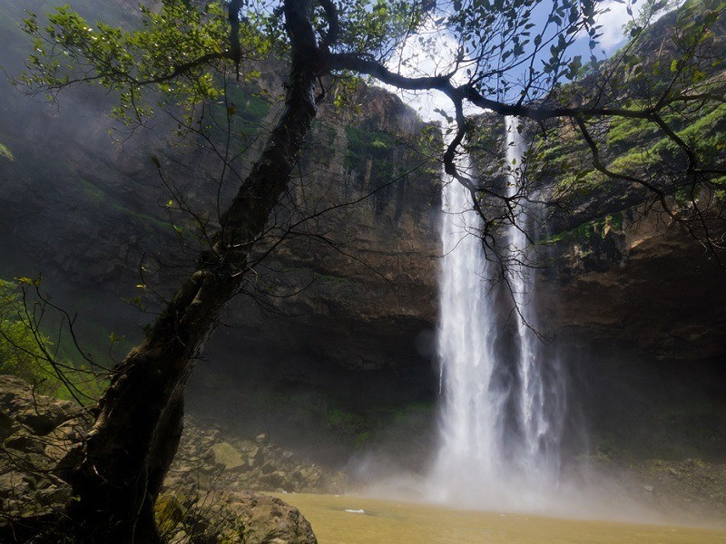
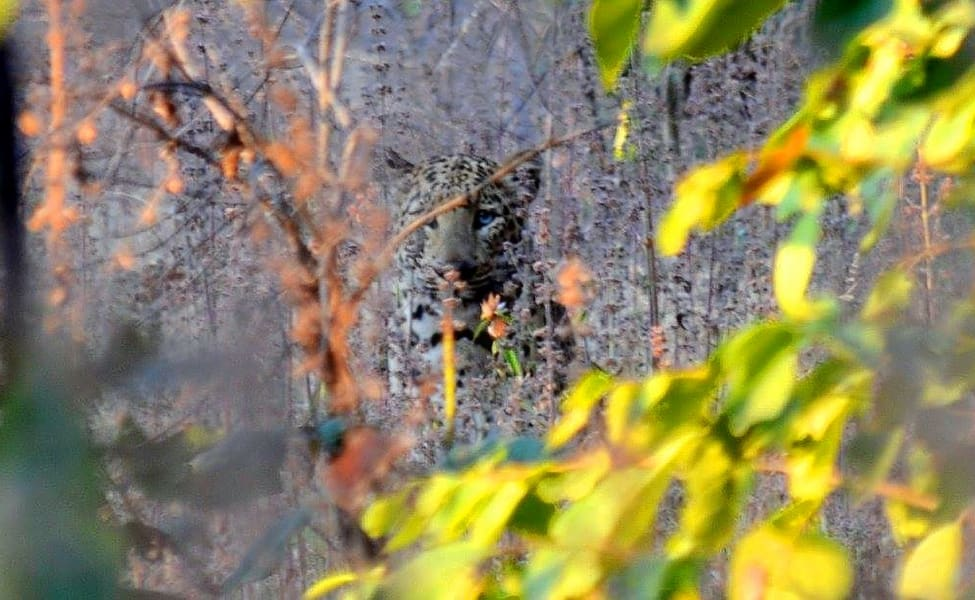
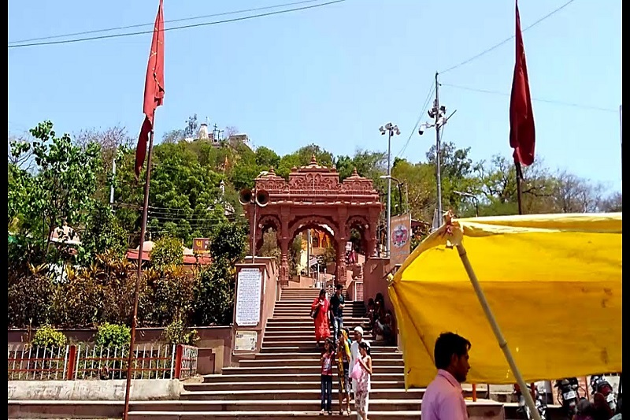
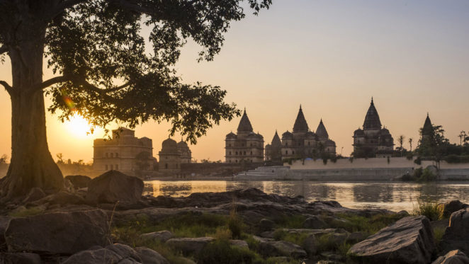
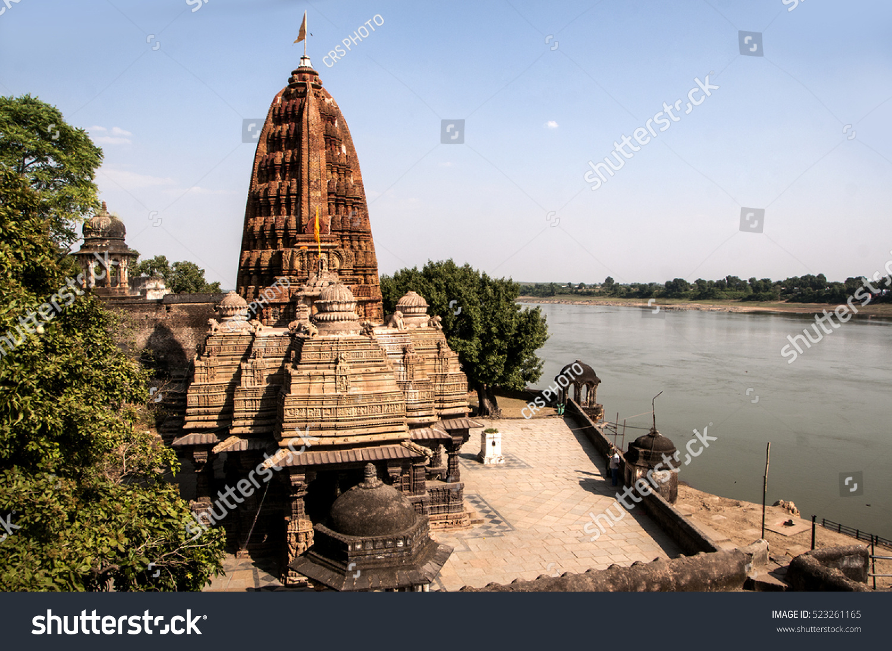
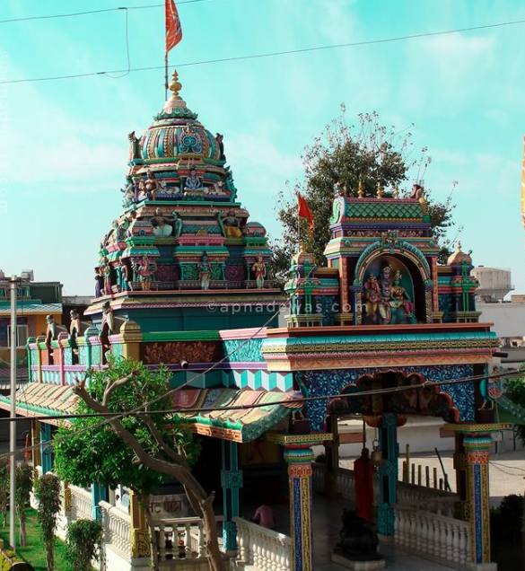
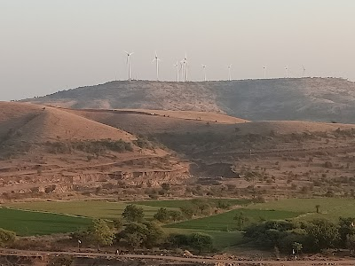
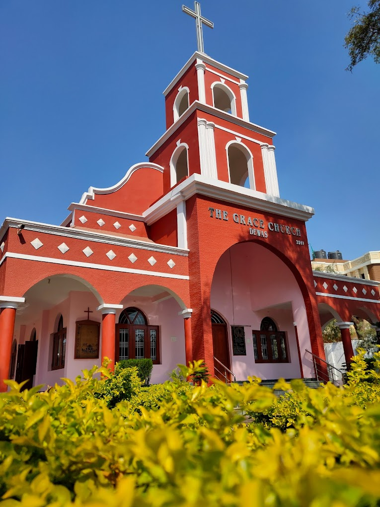

Famous Tourist Destinations In & Around Dewas
Gidya Khoh

Dewas city of Madhya Pradesh is a place filled with natural beauty & rich history enchanting the visitors coming to this palce. Gidya Khoh is a unique amalgamation of man-made wonders & nature and is situated on the Indore-Nemawar road. Khudel Devta is a respected deity of the tribal people inhabiting this forest region with an idol enshrined here. On every Poornima (Full Moon Night) and on Amawasya (Lunar Conjunction) the tribal people gather at this place to pay homage to Khudel Devta and rejoice & dance seeking his blessings. A beautiful & spectacular waterfall falls from the top of the hill at a height of above 600 feet and is surrounded by an attractive lush green valley. During the rainy season the place has an unmatched beauty and a pollution free envoirment attracting a number of tourists again and again to this palce.
Explore Wildlife at Kheoni Sanctuary

Wildlife in Dewas
Established in the year 1955 the Kheoni Wild life Sanctuary is situated in Dewas District of Madhya Pradesh. Covered with rich & dry deciduous forest, consisting mainly of teak & bamboo trees the sanctuary is a natural paradise. A wide variety of flora & fauna can be found in the sanctuary with different species of animals like chital, sambar, blue bull, antelope, wild boar and barking deer inhabiting the sanctuary. Bird lovers will not be disappointed as the sanctuary boosts of an amazing variety of regular and migratory birds. The administration has developed a number of tourists' spots for visitors, so that people coming here can enjoy the beauty of the place. Pilgrims also visit the place twice or thrice in a year to take a dip in the holy 'Bal-Ganga' flowing in the forest of Khivni and pay homage at the ancient Shiv temple in the village. The Shiv temple has ancient idols of the god and goddess attracting religiously inclined to the place again and again.
Pawar Chattries
The everlasting symbols Maratha architecture, The Chattries of Dewas are located near the Meetha Talaab. One is mesmerised with its magnificent & powerful presence and are a living statement of royal might of the Pawar Kings. A architecture to marvel at the Chattries of Dewas offer us a glimpse of the majestic life of an era gone by, filled with splendour and the royalty of the kings.
Kavadia Hills
Located nearly 10 km from Bagli HQ near Dharaji, Kavadia Hills are seven hills of the same type formed by joining of lakhs of stone pillars. These pillars are of various shapes & sizes like triangular, rectangular, pentagonal, hexagonal etc. and are interlocked to form hills. One may assume that the stones are manmade and appear to be carved by human beings; as per Hindu mythology it is believed that during the Mahabharata period the Great Bheem created these structures to alter the way of Narmada River to ful-fill a vow. Since then these stones pillars are presumed to be lying here and form these hills. But if scientific reasons are considered the hills were formed as a result of Volcano eruption. Historians & scientist also consider the Kavadia Hills as the eighth wonder of the World. Another interesting fact is that on striking these stone pillars a sound metal pillars comes out.
Chamunda Tekri

Dewas city lies at the foot of a conical hill popularly known as the Chamunda Tekri or Hill of Goddess Chamunda. Rising above 300 feet above the ground level, the town of Dewas derives its name from the hill meaning Devi - vashini or Goddess Residence. A serene place it has two main shrines one of goddess Choti Mata (Chamunda Mata) and the other is of Badi Mata (Tulja Bhavani Mata) who are believed to be sisters. Situated at the top of the hill is a temple with the image of the goddess carved in the rocky wall of a cave. A flight of stone steps takes the visitors coming here to pay homage to the top of the hill.
Mahakaleshwar Bilawali Temple

For the devotees another place of attraction in Dewas is the temple of Lord Shiva called Mahakaleshwar in Bilavali village, situated on the Agra Bombay Road nearly 3 kms North of Dewas. The temple has a unique Shivling and it is believed that the size of the Shivling increases every year. On the auspicious occasion of Maha Shivratri a fair is organized every year which is flocked by hundreds of people from the neighbouring towns & villages.
Siddheshwar Mahadev Temple

Tourist places in DewasSituated on the banks of Narmada River is the Siddheshwar Mahadev temple which was built during the time of the Parmaras of Malwa. The temple comprises of a Shrine, Sabha-Mandapa and Porch. Decorated with a cluster of miniature Shikaras, and a Paramedical roof over the mandapa.
Kela Devi Temple

Dewas Kela Devi temple is the biggest Kela Devi temple in MP. The temple was built by built by South Indian Artists during ancient times. A white marble gate adorns the temple and is one of the most attractive feature of the temple. During the occasion of Chaitra Navaratri every year a very big Mela or fair is held here attracting devotees from all parts of the country.
Mahadev Temple (Shankar Garh)

This temple was built by the Dewas Ruler - Shrimant Sadashive Rao Maharaja (Khase Saheb) who also holds the credit of being the founder of Girijesher Temple. Constructed in the year 1942 the road of this temple was built after a lot of difficulty by cutting the hills at that time. It is believed that a number of great Hindu religious Sants and Mahatmas used to stay here and impart religious teachings to the residents of Dewas City. Now the temple is a must visit pace for anyone coming to the holy city of Dewas.
Grace Church

Built in the year 1928, the Grace Church is a historic church in Dewas where the Christian people come to offer their prayers. His Highness the Maharaja Mallhar Rao Panwar the then ruler granted the Christians land as well as money to construct their own place of worship, and thus this serene & beautiful church was built. Professor J. W. Johary, prepared the blue prints and played a key role in the construction & maintenance of the church. As per historians Rev. G. William from the period of 1917 to 1938 was the first ordained Minister of the Grace Church. Today also a trip to Dewas is incomplete without a visit to this church.
Many other places of religious importance are present in Dewas like the Datta
Mandir, Gurudwara on AB Road and Kassabban, Kali & Shahi Jama Masjids where
people of different religions go and pray to seek God’s blessings. Dewas city
is thus a perfect example of unity in diversity. Majestic gates like Sayaji
Gate, Shukrawaria Gate, Pathan Kuan Gate and Nahar Darwaza form the important
landmarks of Dewas giving it an unique aura and beauty.
Contact Us
This website is designed & developed by
National Informatics Center, Dewas and maintained by District Administration,
Dewas.
In case you have any query regarding this website, you may write
to the Web Information Manager at mpdew@nic.in
Any feedback, related to
content, design, or technology may be submitted at Feedback section.
You
can also contact us at the following address:
Collector and District
Magistrate Office of The Collector, Dewas-455001 Madhya
Pradesh Email : [dmdewas][at]nic[dot]in Phone: +91-7272-252111